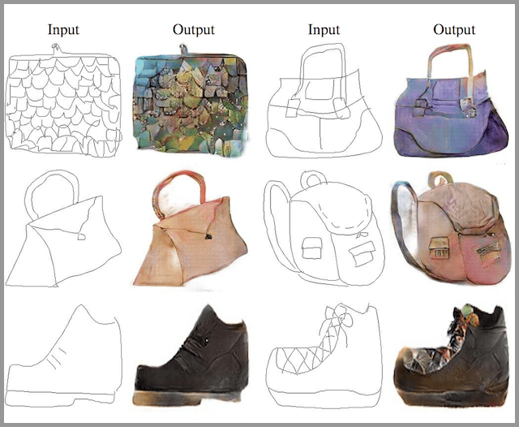
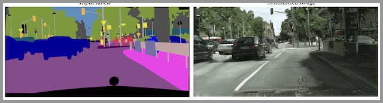
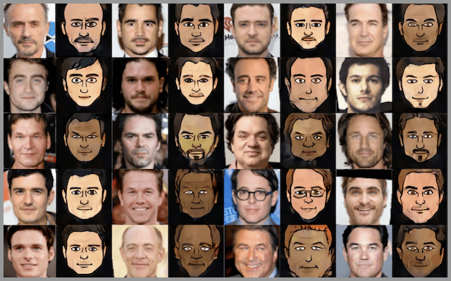

生成对抗网络 – GAN 是最近4年很热门的一种无监督算法，他能生成出非常逼真的照片，图像甚至视频。我们手机里的照片处理软件中就会使用到它。
下面详细介绍生成对抗网络 – GAN 的设计初衷、基本原理、10种典型算法和13种实际应用。
GAN的设计初衷
一句话来概括 GAN 的设计动机就是——自动化。
人工提取特征——自动提取特征
前面已经讲过，深度学习最特别最厉害的地方就是能够自己学习特征提取。
机器的超强算力可以解决很多人工无法解决的问题。自动化后，学习能力更强，适应性也更强。
人工判断生成结果的好坏——自动判断和优化
在监督学习中，训练集需要大量的人工标注数据，这个过程是成本很高且效率很低的。而人工判断生成结果的好坏也是如此，有成本高和效率低的问题。
而 GAN 能自动完成这个过程，且不断的优化，这是一种效率非常高，且成本很低的方式。GAN是如何实现自动化的呢？下面上原理。
生成对抗网络 GAN 的基本原理
知乎上有一个很不错的解释，大家应该都能理解：
假设一个城市治安混乱，很快，这个城市里就会出现无数的小偷。在这些小偷中，有的可能是盗窃高手，有的可能毫无技术可言。假如这个城市开始整饬其治安，突然开展一场打击犯罪的「运动」，警察们开始恢复城市中的巡逻，很快，一批「学艺不精」的小偷就被捉住了。之所以捉住的是那些没有技术含量的小偷，是因为警察们的技术也不行了，在捉住一批低端小偷后，城市的治安水平变得怎样倒还不好说，但很明显，城市里小偷们的平均水平已经大大提高了。
警察们开始继续训练自己的破案技术，开始抓住那些越来越狡猾的小偷。随着这些职业惯犯们的落网，警察们也练就了特别的本事，他们能很快能从一群人中发现可疑人员，于是上前盘查，并最终逮捕嫌犯；小偷们的日子也不好过了，因为警察们的水平大大提高，如果还想以前那样表现得鬼鬼祟祟，那么很快就会被警察捉住。
为了避免被捕，小偷们努力表现得不那么「可疑」，而魔高一尺、道高一丈，警察也在不断提高自己的水平，争取将小偷和无辜的普通群众区分开。随着警察和小偷之间的这种「交流」与「切磋」，小偷们都变得非常谨慎，他们有着极高的偷窃技巧，表现得跟普通群众一模一样，而警察们都练就了「火眼金睛」，一旦发现可疑人员，就能马上发现并及时控制——最终，我们同时得到了最强的小偷和最强的警察。
生成对抗网络（GAN）由2个重要的部分构成：
- 生成器(Generator)：通过机器生成数据（大部分情况下是图像），目的是“骗过”判别器
- 判别器(Discriminator)：判断这张图像是真实的还是机器生成的，目的是找出生成器做的“假数据”
下面详细介绍一下过程：
第一阶段：固定「判别器D」，训练「生成器G」
我们使用一个还 OK 判别器，让一个「生成器G」不断生成“假数据”，然后给这个「判别器D」去判断。
一开始，「生成器G」还很弱，所以很容易被揪出来。
但是随着不断的训练，「生成器G」技能不断提升，最终骗过了「判别器D」。
到了这个时候，「判别器D」基本属于瞎猜的状态，判断是否为假数据的概率为50%。
第二阶段：固定「生成器G」，训练「判别器D」
当通过了第一阶段，继续训练「生成器G」就没有意义了。这个时候我们固定「生成器G」，然后开始训练「判别器D」。
「判别器D」通过不断训练，提高了自己的鉴别能力，最终他可以准确的判断出所有的假图片。
到了这个时候，「生成器G」已经无法骗过「判别器D」。
循环阶段一和阶段二
通过不断的循环，「生成器G」和「判别器D」的能力都越来越强。
最终我们得到了一个效果非常好的「生成器G」，我们就可以用它来生成我们想要的图片了。
下面的实际应用部分会展示很多“惊艳”的案例。
GAN的优缺点
3个优势
- 能更好建模数据分布（图像更锐利、清晰）
- 理论上，GANs 能训练任何一种生成器网络。其他的框架需要生成器网络有一些特定的函数形式，比如输出层是高斯的。
- 无需利用马尔科夫链反复采样，无需在学习过程中进行推断，没有复杂的变分下界，避开近似计算棘手的概率的难题。
2个缺陷
- 难训练，不稳定。生成器和判别器之间需要很好的同步，但是在实际训练中很容易D收敛，G发散。D/G 的训练需要精心的设计。
- 模式缺失（Mode Collapse）问题。GANs的学习过程可能出现模式缺失，生成器开始退化，总是生成同样的样本点，无法继续学习。
10大典型的GAN算法
GAN 算法有数百种之多，大家对于 GAN 的研究呈指数级的上涨，目前每个月都有数百篇论坛是关于对抗网络的。
下图是每个月关于 GAN 的论文发表数量：
如果你对 GANs 算法感兴趣，可以在 「GANs动物园」里查看几乎所有的算法。这里我为大家从众多算法中挑选了10个比较有代表性的算法，技术人员可以看看他的论文和代码。
| 算法 | 论文 | 代码 |
|---|---|---|
| GAN | 论文地址 | 代码地址 |
| DCGAN | 论文地址 | 代码地址 |
| CGAN | 论文地址 | 代码地址 |
| CycleGAN | 论文地址 | 代码地址 |
| CoGAN | 论文地址 | 代码地址 |
| ProGAN | 论文地址 | 代码地址 |
| WGAN | 论文地址 | 代码地址 |
| SAGAN | 论文地址 | 代码地址 |
| BigGAN | 论文地址 | 代码地址 |
上面内容整理自《Generative Adversarial Networks – The Story So Far》原文中对算法有一些粗略的说明，感兴趣的可以看看。
GAN 的13种实际应用
GAN 看上去不如「语音识别」「文本挖掘」那么直观。不过他的应用已经进入到我们的生活中了。下面给大家列举一些 GAN 的实际应用。
生成图像数据集
人工智能的训练是需要大量的数据集的，如果全部靠人工收集和标注，成本是很高的。GAN 可以自动的生成一些数据集，提供低成本的训练数据。
生成人脸照片
生成人脸照片是大家很熟悉的应用，但是生成出来的照片用来做什么是需要思考的问题。因为这种人脸照片还处于法律的边缘。
生成照片、漫画人物
GAN 不但能生成人脸，还能生成其他类型的照片，甚至是漫画人物。
图像到图像的转换
简单说就是把一种形式的图像转换成另外一种形式的图像，就好像加滤镜一样神奇。例如：
- 把草稿转换成照片
- 把卫星照片转换为Google地图的图片
- 把照片转换成油画
- 把白天转换成黑夜

文字到图像的转换
在2016年标题为“ StackGAN：使用 StackGAN 的文本到逼真照片的图像合成 ”的论文中，演示了使用 GAN，特别是他们的 StackGAN，从鸟类和花卉等简单对象的文本描述中生成逼真的照片。
语意 – 图像 – 照片 的转换
在2017年标题为“ 高分辨率图像合成和带条件GAN的语义操纵 ”的论文中，演示了在语义图像或草图作为输入的情况下使用条件GAN生成逼真图像。

自动生成模特
在2017年标题为“ 姿势引导人形象生成 ”的论文中，可以自动生成人体模特，并且使用新的姿势。
照片到Emojis
GANs 可以通过人脸照片自动生成对应的表情（Emojis）。

照片编辑
使用GAN可以生成特定的照片，例如更换头发颜色、更改面部表情、甚至是改变性别。

预测不同年龄的长相
给一张人脸照片， GAN 就可以帮你预测不同年龄阶段你会长成什么样。

提高照片分辨率，让照片更清晰
给GAN一张照片，他就能生成一张分辨率更高的照片，使得这个照片更加清晰。
照片修复
假如照片中有一个区域出现了问题（例如被涂上颜色或者被抹去），GAN可以修复这个区域，还原成原始的状态。

自动生成3D模型
给出多个不同角度的2D图像，就可以生成一个3D模型。

高山仰止 景行行止 虽不能至 心向往之
If you like this blog or find it useful for you, you are welcome to comment on it. You are also welcome to share this blog, so that more people can participate in it!